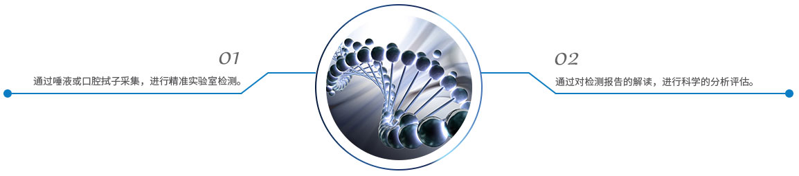

完整疗愈健康管理中心
通过生物电，生物共振，能量学，心理等方法，综合对客人进行细胞层面的保养，尤其是线粒体ATP层面上的保养。
基因是遗传的基本单元，携带有遗传信息的DNA或RNA序列，通过复制，把遗传信息传递给下一代，指导蛋白质的合成来表达自己所携带的遗传信息，从而控制生物个体的性状表达。基因检测是通过血液、其他体液、或细胞对DNA进行检测的技术，是取被检测者外周静脉血或其他组织细胞，扩增其基因信息后，通过特定设备对被检测者细胞中的DNA分子信息作检测，分析它所含有的基因类型和基因缺陷及其表达功能是否正常的一种方法，从而使人们能了解自己的基因信息，明确病因或预知身体患某种疾病的风险。
基因检测可以诊断疾病，也可以用于疾病风险的预测。疾病诊断是用基因检测技术检测引起遗传性疾病的突变基因。目前应用最广泛的基因检测是新生儿遗传性疾病的检测、遗传疾病的诊断和某些常见病的辅助诊断。
适用基因检测
基因检测原理
基因检测定制流程
基因检测临床意义